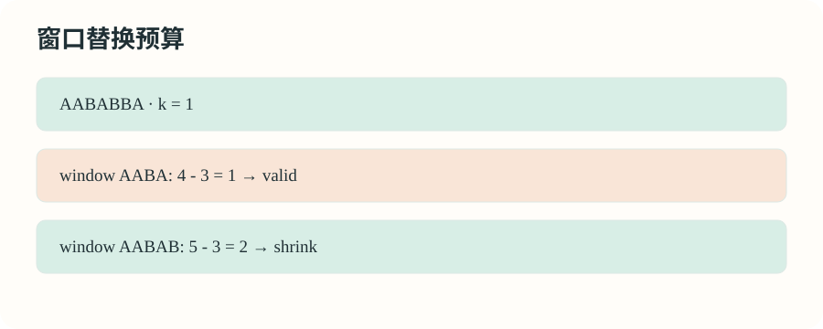
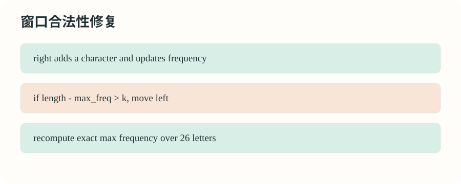
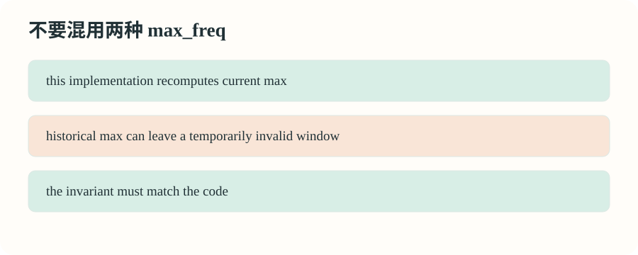

LEETCODE 424 / MEDIUM / SLIDING WINDOW
替换后的最长重复字符
Longest Repeating Character Replacement · 给定只含大写英文字母的字符串 s 和最多替换次数 k，求经过不超过 k 次字符替换后，能得到的最长同字符连续子串长度。AABABBA、k=1 的答案为 4。
01 · 关键观察：窗口需要改多少次
对任意窗口，保留其中出现最多的字符，把其他字符都改成它。最少替换次数就是 window_length - max_frequency。朴素枚举所有子串并重算频次很慢；滑动窗口让每个字符只进入和离开窗口一次。
02 · 状态与不变量
count 记录当前窗口中 26 个大写字母的频次。若窗口长度减去最高频数大于 k，说明替换预算不足，必须移动 left 收缩。每次收缩后窗口重新满足 window_length - max_frequency ≤ k。

03 · 关键步骤交互

步骤 1 / 4
加入 A
窗口 A，最高频率 1，需要替换 0 次。
窗口长度减最高频数不超过 k。
当前第 1 步
04 · 正确性证明
固定一个窗口，若最高频字符出现 f 次，至少要改动其余 L-f 个字符；把其余字符全部改成最高频字符即可达到该下界，因此最少替换次数恰为 L-f。算法扩展 right 后，只在该值超过 k 时收缩 left，直到窗口可行。left 与 right 都单调前进，所有可行窗口长度都在扫描过程中被考察，记录最大长度即最优值。
05 · Python 实现
class Solution:
def characterReplacement(self, s: str, k: int) -> int:
count = [0] * 26
left = best = 0
for right, char in enumerate(s):
count[ord(char) - ord("A")] += 1
max_freq = max(count) # 固定 26 个槽位
while right - left + 1 - max_freq > k:
count[ord(s[left]) - ord("A")] -= 1
left += 1
max_freq = max(count)
best = max(best, right - left + 1)
return best时间 O(26n)=O(n)，辅助空间 O(26)=O(1)。每个字符最多加入一次、移除一次；每次最多扫描 26 个频次槽。
06 · 易错点
替换次数不是窗口长度，也不是不同字符种类数，而是窗口长度减最高频字符数量。不能把历史最大频率写进代码，却仍用“当前窗口始终合法”的证明。k=0 时答案就是最长连续相同字符段；k 大于等于字符串长度时答案是 n。
